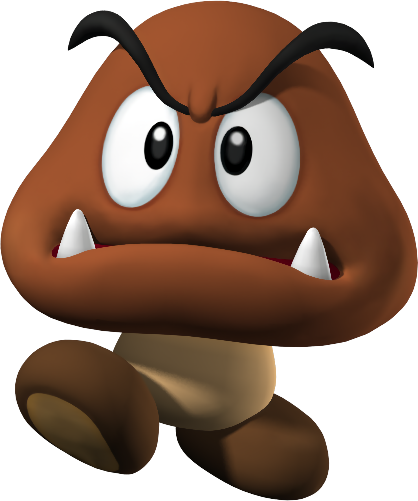
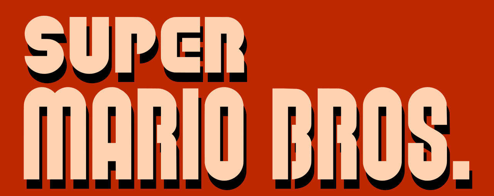

Super Mario (créée par Nintendo) est une série de jeux de plate-formes des fois en 2D et aussi en 3D qui ont joué ou plutôt marqué un rôle important das l'évolution du jeu de type "plate-formes" dont les développeurs renouvellent régulièrement les codes.
Dans les jeux en 2D de la série Super Mario, le gameplay consiste principalement à sauter sur les ennemis et éviter leurs attaques.
Dans les jeux en 3D, des batailles ont été intégrées. L'accent est mis sur la réussite d'objectifs variés, comme battre des ennemis, atteindre des endroits spécifiques ou résoudre des puzzles. Tout au long de la série, la collecte de power-ups (Champignon, Fleur de feu, étoile, et plein d'autres types de pouvoir!) fait partie intégrante du gameplay
La franchise met en scène sa mascotte Mario ainsi que, dans beaucoup de jeux, son frère Luigi. Il s'agit de la première série de la franchise Mario. Au moins un jeu Super Mario est sorti sur chaque console majeure de Nintendo depuis le premier épisode, , sorti en 1985 sur Nintendo Entertainment System.
Les aventures de Mario ce passent majoritairement dans le Royaume Champignon.
Mario progresse dans des niveaux variés dans lesquels il saute pour battre des ennemis.
Le jeu met généralement en scène des intrigues simples ; la plus commune étant que  Bowser, le principal ennemi, kidnappe la Princesse Peach,
Bowser, le principal ennemi, kidnappe la Princesse Peach, que Mario doit ensuite sauver.
En gros, Mario est le garde du corps de Princess Toadstool Peach le plus loyal qui soit!
Super Mario Bros. a établi beaucoup de concepts et d'éléments de gameplay qui apparaissent dans presque chaque jeu de la série, incluant une multitude de power-ups qui donnent à Mario des capacités spéciales, par exemple celle de lancer des boules de feu, ou d'autres choses.
que Mario doit ensuite sauver.
En gros, Mario est le garde du corps de Princess Toadstool Peach le plus loyal qui soit!
Super Mario Bros. a établi beaucoup de concepts et d'éléments de gameplay qui apparaissent dans presque chaque jeu de la série, incluant une multitude de power-ups qui donnent à Mario des capacités spéciales, par exemple celle de lancer des boules de feu, ou d'autres choses.
Les jeux Super Mario ont été vendus à plus de 310 millions d'exemplaires dans le monde jusqu'en septembre 2015, ce qui en fait la série de jeux vidéo la plus vendue de tous les temps.
Mario est un personnage de jeu vidéo devenu la mascotte de Nintendo, facilement reconnaissable à sa moustache, à sa salopette, à ses gants blancs et à sa casquette rouge marquée d'un inscrit dans un cercle blanc.
Né de l'imagination du concepteur de jeux Shigeru Miyamoto, il est italo-américain et des rumeurs disent que c'est un fou des spaghettis et de raviolis quand que l'entend marmonner dans son sommeil dans le jeu Super Mario 64 !

Il fut apparaître pour la première fois en 1981 dans un jeu arcade titulé
"Donkey Kong" sous le nom de Jumpman.
Il fut rebatisé Mario dans Donkey Kong Jr. sortie en 1982 en arcade. Dans ce jeu, a seule fois où il endosse le rôle d'antagoniste du personnage contrôlé par le joueur, en l'occurrence le fils de Donkey Kong,
dont le but est de délivrer son père captif de Mario.
Le retour au premier plan de Mario se fait en 1983 dans Mario Bros., épisode qui voit également l'apparition de son frère Luigi. Dans ce jeu, les deux frères ne peuvent pas sauter sur leurs ennemis, mais doivent les faire trébucher pour ensuite les éjecter hors de l'écran.
Mais depuis 1985 c'est la série à succès des Super Mario qui a fait de lui un phénomène mondial et l'un des personnages emblématiques du jeu vidéo.
Depuis, Mario a accompagné toutes les consoles de Nintendo qui puissent exister!